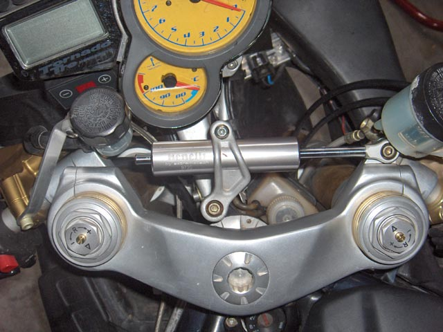
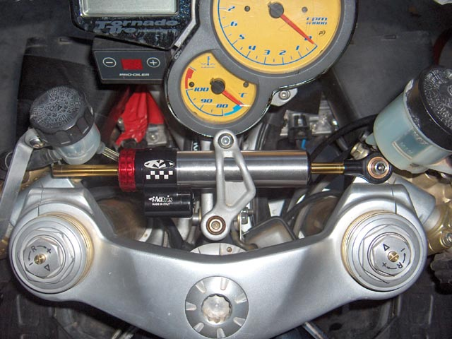
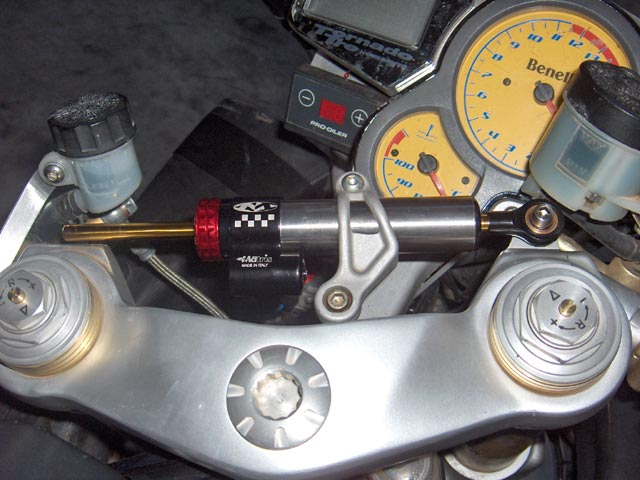
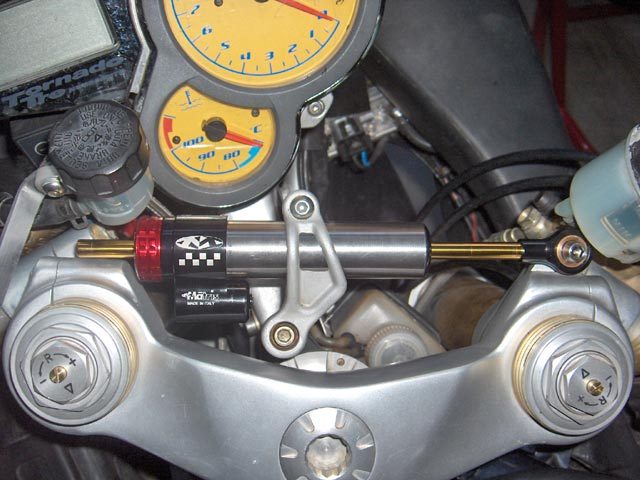

The original damper was replaced under warranty in 2007. The new one, while still working fine, was beginning to weep slightly, and felt "bubbly" when removed and operated by hand. So it was on the way out. Time for a new Matris M4R, supplied by the great sage and guru, Laurence White.
|  |  |
I opted to re-use the original bracket, because the Matris supplied one set the damper 2mm further forward at the centre, which would result in the shaft & body fouling the clutch fluid reservoir. As it is, I had to bend the reservoir bracket slightly to provide clearance.
|  |  |
As you can see, the extreme right position has a couple of mm's clearance.
I've increased my left and right lock angles, and have added a hydraulic clutch, so my installation
required a little more care with clearances, than a standard Tornado would need. The Matris supplied
bracket would be fine in most cases.
If you use the OEM bracket with the Matris damper, take care to expand it with a wedge, or it will not slip
freely over the new damper, and may scratch it.